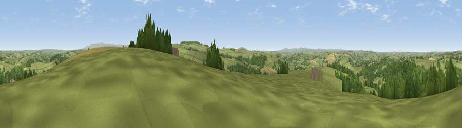

Viewpoint near Tinhay
#11462 in England · top 17% of its area beats it · near TinhayWhere it is
The exact computed spot (SX 39375 83725). Click the marker for map links.
The view, rendered

A 360° render of this exact spot computed from the terrain model, tree cover and land cover — summer colours, afternoon light, calibrated against photographs of famous viewpoints. Real trees, hedges and buildings will differ in detail.
The panorama
Grey silhouette: terrain skyline in each direction (720 bearings, Earth curvature and refraction included). Dashed green: skyline with trees (+15 m) and buildings (+8 m) as obstacles. Blue strip: how far the ground is visible on each bearing.
Where the view opens
Wedge length = distance to the farthest visible ground on that bearing (vegetation-aware). Rings at 10, 25 and 50 km.
What fills the view
65% grassland · 27% woodland · 6% cropland · 1% built-up
Angular shares of the visible panorama (visual magnitude), not map area. Landscape diversity 0.38 (0–1 Shannon).
Key numbers
More beautiful places nearby
The staircase of upgrades: each row has a higher view potential than everything closer. Driving times are estimates from straight-line distance, calibrated against real road routing — check an actual route before setting out.
| Place | Direction | Drive | Score |
|---|---|---|---|
| Viewpoint near Chillaton | SE · 3 km | ~7 min | 63.4 |
| Viewpoint near Bradstone | S · 4 km | ~9 min | 64.1 |
| Viewpoint near Chillaton | SE · 4 km | ~9 min | 65.2 |
| Brent Tor | ESE · 8 km | ~17 min | 73.4 |
| Viewpoint near Kelly Bray | S · 12 km | ~23 min | 73.8 |
| Hingston Down | S · 12 km | ~23 min | 78.3 |
| Kit Hill | S · 13 km | ~23 min | 80.3 |
| Viewpoint near Dousland | SE · 21 km | ~36 min | 81.0 |
50.63104, -4.27254 · source: screening · position refined by local search. Computed location — check access rights before visiting.